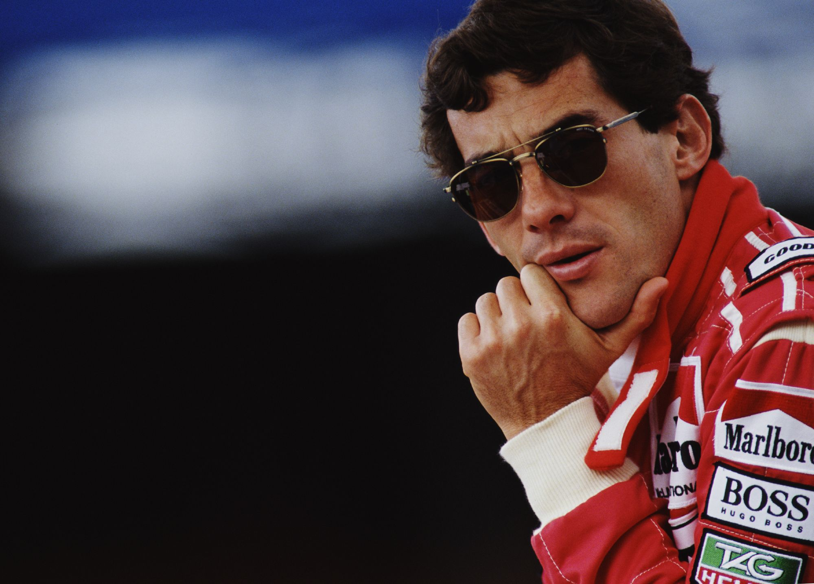
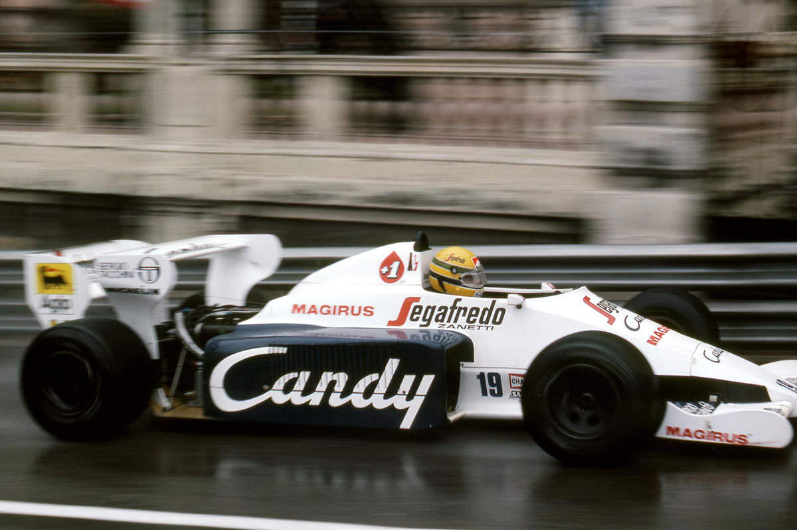
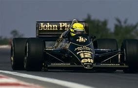
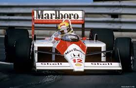
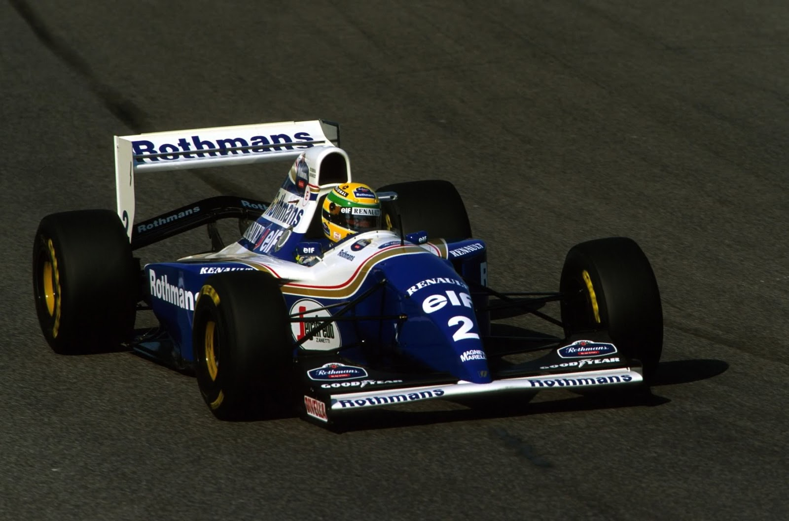

| Inicio |

Ayrton Senna fue un legendario piloto brasileño de Fórmula 1, considerado uno de los más talentosos y carismáticos de la historia del automovilismo. Nació el 21 de marzo de 1960 en São Paulo, Brasil, y compitió en la máxima categoría entre 1984 y 1994, logrando tres campeonatos mundiales en 1988, 1990 y 1991.
Su legado en la Fórmula 1
Su trágico final
Senna falleció el 1 de mayo de 1994 en el Gran Premio de San Marino, tras un accidente en la curva Tamburello mientras conducía el Williams FW16. Su muerte conmocionó al mundo y llevó a importantes mejoras en la seguridad de la Fórmula 1.
Su legado sigue vivo, y su impacto en el automovilismo es incuestionable.
| NOMBRE | IMAGEN | INFORMACION |
| Toleman TG184 |  | El Toleman TG184 fue el monoplaza de Fórmula 1 que Ayrton Senna utilizó en 1984 para lograr sus primeros podios. Su momento más icónico fue en Mónaco, donde casi venció a Alain Prost bajo la lluvia antes de que la carrera fuera detenida. Con un motor Hart turbo y neumáticos Michelin, consiguió tres podios en total y marcó el inicio de la carrera legendaria de Senna. |
| Lotus 98T'85 |  | El Lotus 98T de 1986, con motor Renault V6 turbo, superaba los 1,000 HP en clasificación. Fue pilotado por Ayrton Senna, destacando por su velocidad y tecnología. |
| Maclaren mp4/4 |  | El McLaren MP4/4 fue el monoplaza con el que Senna y Prost dominaron la F1 en 1988, ganando 15 de 16 carreras gracias a su potente motor Honda V6 turbo y su diseño aerodinámico. Es considerado uno de los autos más exitosos de la historia. |
| Williams FW16 |  | El último coche que Ayrton Senna condujo en la Fórmula 1 fue el Williams FW16 durante la temporada 1994. Este monoplaza, diseñado por Adrian Newey, tenía un motor Renault V10 y era considerado un auto difícil de manejar debido a la eliminación de ayudas electrónicas como el control de tracción. Lamentablemente, Senna sufrió un accidente fatal en el Gran Premio de San Marino, el 1 de mayo de 1994, mientras pilotaba este coche. |